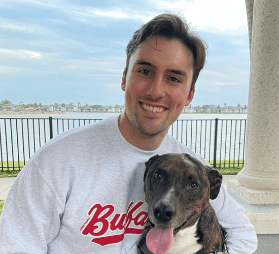
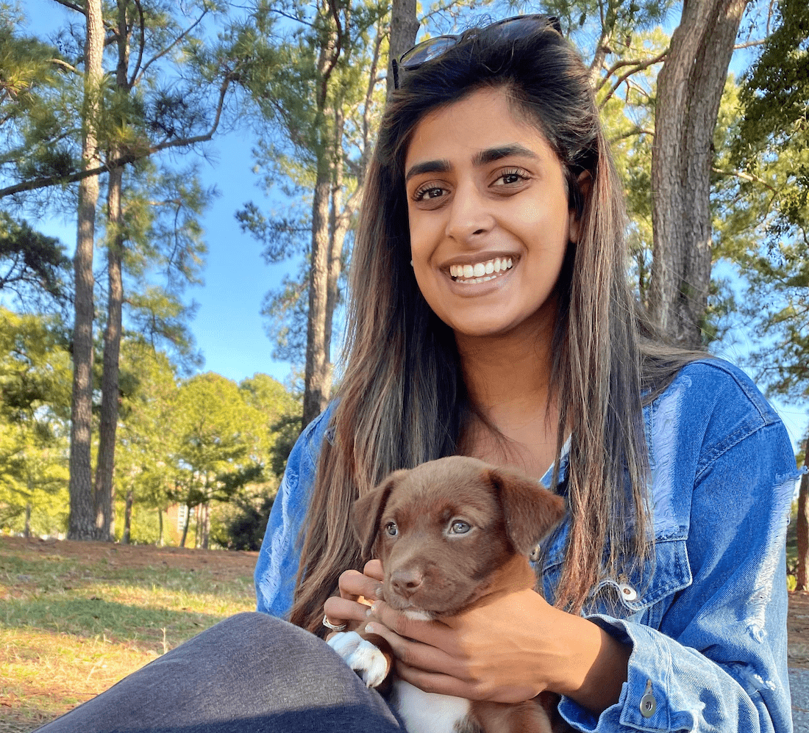
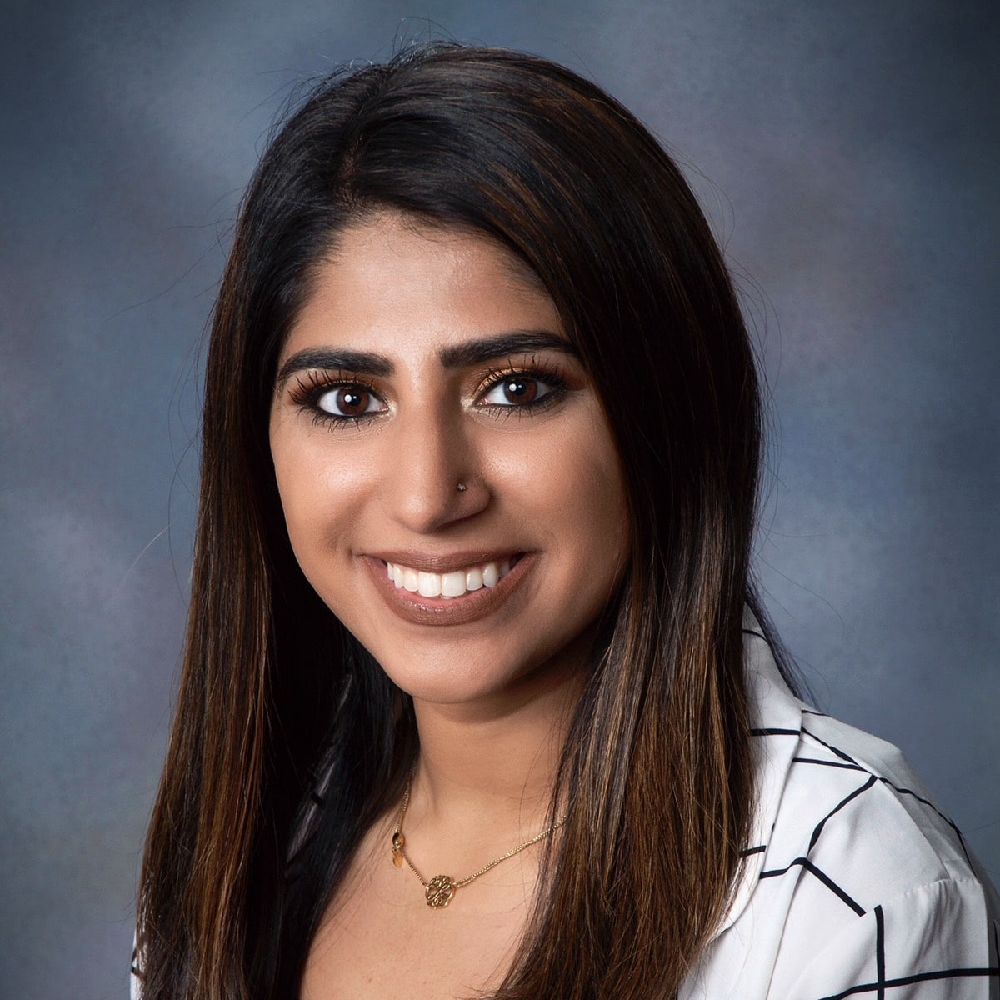

WHAT WE DO
At EnlightYou, the services we provide are a product of our team’s collaborative efforts.
01.
CONSULTATION
The EnlightYou team strives to provides personalized guidance specifically tailored for each student. During the initial consult with one of our educational directors, we take the time to appreciate our student’s goals, definition of success, and personality to tailor our services to their particular needs.02.
CONNECTION
After developing a clear understanding of our students and their ambitions, we connect them with a member of the EnlightYou team. We specifically match together an EnlightYou mentor whose teaching style complements the learnings-style of the student.03.
COLLABORATION
The EnlightYou mentor provides personalized mentorship and instruction on any topics of interest. We strive to ensure that the EnlightYou mentor-mentee relationship is continuously maturing. We constantly reach out for feedback so our team can improve and exceed our students’ expectations.OUR TEAM
Krunal Patel, OMS-IV
CEO & Founder

Michael Downing, OMS-III
Director of ResearchAkash Patel, OMS-IV
Director of Career Development

Simran Patel, P1
Director of Humanitarian Outreach
Sunil Patel, M.S. in Computer Science
Career Development and TutoringRushil Patel, M.S. in Computer Science
Career Development and TutoringOUR VISION
To inspire students to create success from within. Every student creates their own definition of success. Our team provides support and guidance to transform those visions into a reality.
OUR AWESOME STUDENTS
just a few words from them...
“Yes, I’m certain your scores will improve drastically after working with Krunal, but more importantly I believe working with him will make you a better person and physician. Krunal is truly a professional. It only took only one tutoring session for me to figure out how to improve my test scores. More importantly though, I learned how to slow down to comprehend information, to study in a more personalized and effective way, so that I could be more than just a good test taker, but instead a good physician. Krunal was empathetic, perceptive to my academic needs, and it was obvious that he truly wanted to see me succeed. “You can text me anytime even after the session,” he said, tutoring me just minutes before a medical school interview. In the middle of interviews, he is somehow not only showing excellence in his own work, but also finding ways to be innovative and help others. His tutoring is not about gaming a system; his work is about nurturing you to become the physician your patients deserve.”
Nitya Kumaran OMS-1, NSU-KPCOM

“Working with Krunal was one of the best decisions I made in my first semester of medical school. He is a fantastic teacher, who explains concepts thoroughly with examples and clinical correlations that keeps his lessons interesting. Krunal breaks down difficult concepts so that I understand the material, rather than just memorizing information. He engages his students with questions and will adapt to your preferences. Krunal is also super personable, polite, humble, and easy to talk to. He built my confidence immensely, making me believe in myself and feel excited to study. My grades improved after just one session with Krunal, and they have been steadily increasing ever since. He also gives great career and life advice and always makes the time to ask how you are doing. Krunal starts and ends every session casually and makes an active effort to get to know and build a bond with his students. This allowed us to communicate better and further tailor our sessions to my learning style. His schedule is flexible and he will work with you to find times to meet- no matter what time of day or how long his day was. He is also quick with responding to texts and clears any confusion that arise while you are independently studying. He replies to all my questions, no matter how detailed, and always knows the correct answer. I can confirm that he is a master in every subject taught in medical school. I can confidently say that every time I study a subject with Krunal, my knowledge grows and I understand concepts to a deeper, more proficient level. I attribute this to my success in my first semester. Overall, I would HIGHLY recommend Krunal as a tutor and mentor. He will definitely help you succeed and reach all your goals— both academically and career-wise.”
Mariam Dar OMS-1, NSU-KPCOM“Throughout medical school I was having difficulty balancing all my classes and staying on top of them. Despite my best efforts, I felt I was lacking in my study methods and needed support. I began tutoring with Krunal and immediately found myself understanding material to a greater depth that I never had before. My tutoring sessions not only impacted my grades positively and changed entire letter grades but I also was gaining an understanding I had never before. On top of my tutoring, Krunal has always made me feel like I’m more than just a student but rather a friend too. We have a great relationship where I feel like I can make jokes and also vent if I am having a hard time in school. This tutoring helped me gain not only a tutor but a mentor and an awesome friend!”
Zubiya Syed OMS-I, NSU-KPCOM“The first year of medical school is very challenging to say the least. Many people struggle to find the proper resources to help them with their lecture material. This was especially true for me when I got to the Cardio portion of the physiology course. I remember feeling hopeless while I was trying to learn concepts such as PV loops and what each part of the loop represented. I remember that before I contacted Michael I was not able to grasp this concept with any other resource. Michael broke down and simplified the concept in a way that was very easy to understand and keep up with. That is just one of the many concepts that Michael helped me solidify. I wouldn’t have been able to make it during the cardiology portion of the Physiology course without Mike!”
Abdul OMS-2, NSU-KPCOM“Without Mike’s reviews, I wouldn’t have had such an easy time making it through cellular and cardiac physiology. Navigating such an overwhelming amount of material can be daunting, and Mike does an excellent job at making the material more manageable by getting students to really understand concepts instead of just memorizing them. He is incredibly gifted at explaining difficult to grasp concepts in the most understandable manner. He ensures that no student gets left behind by starting from the basics on every topic.”
David OMS-2, NSU-KPCOM“Mike is an extremely knowledgeable, patient and effective tutor. I’ve worked with him to prepare for multiple exams in various areas of study and appreciated his ability to break down daunting concepts in a way that just sticks in a short amount of time. I truly feel that our sessions were integral to my academic success in my first year of medical school.”
Nadia OMS-2, NSU-KPCOM“I contacted Krunal after failing an NBME practice test 5 weeks before my Step 1. I had done all of UWORLD 1x, 1/3 of my incorrects, Pathoma, Sketchy and the USMLE Rx videos but was unable to put it together. After months of studying I was burning out and I felt like I was forgetting things as fast as I learned them. As soon as Krunal assessed my study situation we hit the ground running and it was a 5 week marathon to my exam. Early mornings, late nights, and weekends. We went through all of first aid, Pathoma, and multiple NBME exams. Krunal knows the material, knows what is commonly tested, and knows how to approach these tests. He was willing to put in the time to get me to my goal and gave me that extra push I needed to get it done.”
Eddie Makarevich OMS-3, NSU-KPCOM“I used Krunal’s mentoring and tutoring services for Step 1, Step 2, and personal statement editing for residency applications, all with outstanding results. He genuinely took the time to understand my personality and learning style. Honestly, he felt like more of a friend than a tutor to me. I would strongly recommend anyone, whether you’re feeling lost or just needing to examinations scores, to utilize his mentoring service.”
Ryan Brown OMS-IV, NSU-KPCOM